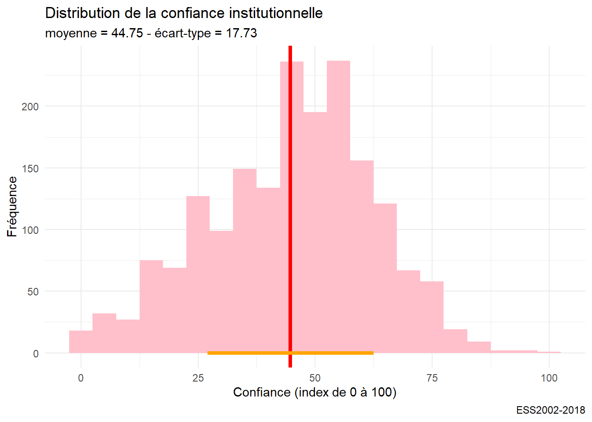
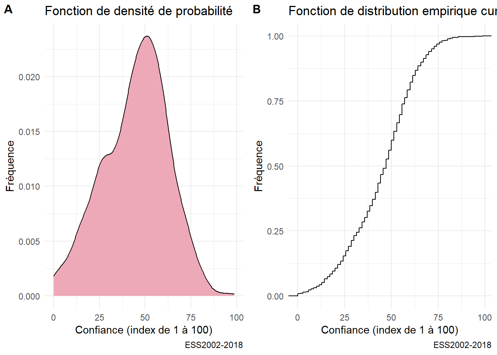
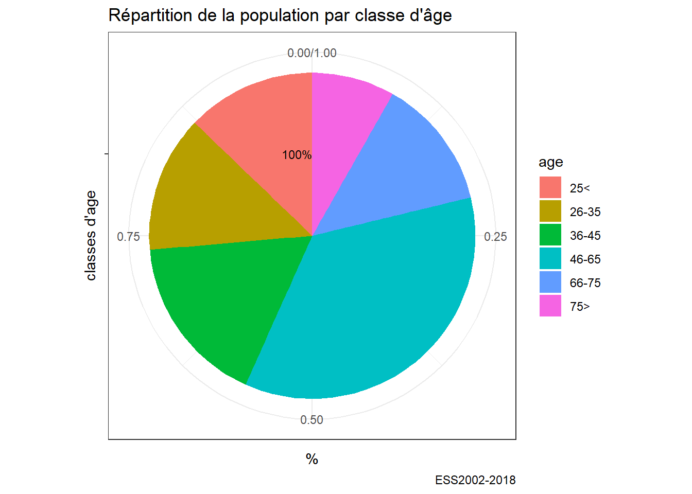
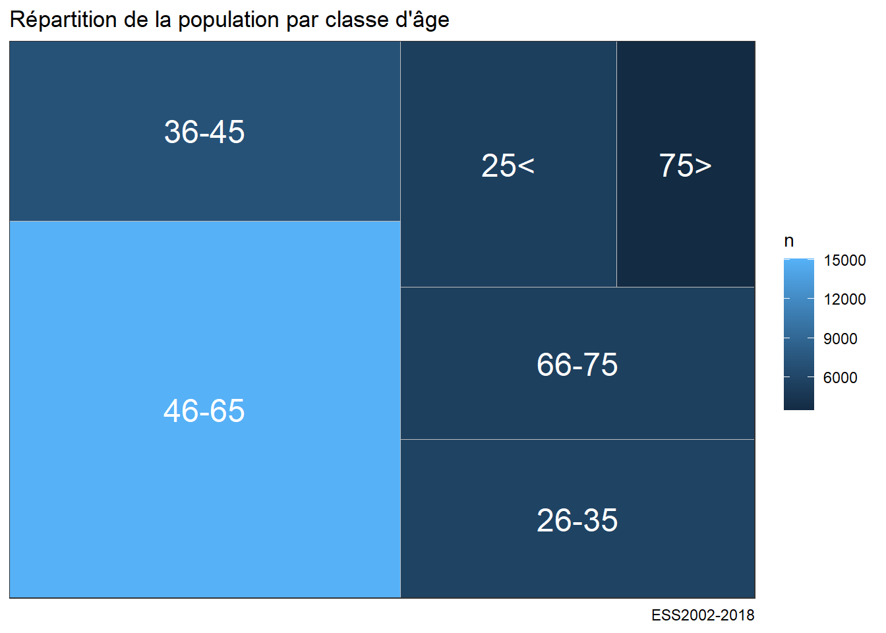

Chapitre 5 Une introduction à ggplot
Nous avons appris à lire des données, à les manipuler, nous avons le droit d’être pressé de les représenter de manière immédiatement lisible, par des dataviz.
On présente d’abord rapidement le concept de grammaire des graphiques
On se cncentre ensuite sur un cas d’étude
On décline.
5.1 La grammaire des graphiques
C’est sans doute une des percées conceptuelles laplus intéressante des datasciences. La représentation graphhiques des données fait l’objet à la fois d’une explosion créative mais aussi d’une synthèse théorique. C’est l’apport de la grammaire des graphiques.
Ces outils s’appuient sur l’idée de grammaire des graphiques. En voici un clair résumé.En français il y a toujours le larmarange
5.1.1 Un modèle en couche
Celle-ci met un ordre dans les éléments qui composent un graphique et les superpose.

layers
- l’aesthetic definit les éléments que l’on veut représenter : ce qu’on met en abscisse, ce qu’on met en ordonnné, les groupes que l’on veut distinguer.
- la geométrie (geom_x)qui définit la forme de représentation
- les échelles (scale_x)
- Labelisation (labs)
- les templates
ggplot est construit selon cette structure. Voici le book de référence
, qui est au centre de ce cours. On aura besoin de manière assez systématique de manipuler les données avant de les représenter, dplyr nous permet de le faire aisément.
5.1.2 Une typologie des représentations
Un point de départ fondamental est la gallery de ggplot,, elle présente de manière synthétique toute les types de figures qui peuvent être présentées. Avec du code facilement reproductible.
Une classification simple
- Analyse univariée
- Analyse bi variée
- Analyse multivariée ** les variables sont quantitatives : on analyse des matrices de corrélations ** les variables sont qualitatives : on analyse des tableaux croisés
- Analyse geospatiale
- Analyse de réseaux
- analyse d’arbres
- Diagramme de flux
5.1.3 L’esthétique
L’ésthétique du diagramme dépends de ses lay out et de ses couleurs
5.1.3.1 Quelques templates
5.1.3.2 l’art des palettes
L’art des couleurs tient dans les palettes on aimera celles de Wes Anderson, on peut adorer fishualize. on trouvera
5.2 Une étude de cas
Les données sont extraites de l’ESS, une sélection est disponible ici. Elle couvre les 9 vagues et concernent la France et L’Allemagne. Les variables dépendantes (celles que l’on veut étudier et expliquer) sont les 9 items de la confiance, les variable considérées comme indépendantes (ou explicatives) sont une sélection de variables socio-démographiques : âge, genre, perception du pouvoir d’achat, orientation politique, type d’habitat.
On fait quelques opérations de recodage et on renomme les variables avoir une lecture plus aisée des variables et de leurs catégories.
On appele au début les bibliothèques. ggplot - dont voici le book de référence, qui est au centre de ce cours,
5.3 Analyse univariée
L’analyse univarié, comme son nom l’indique, ne s’intéresse qu’à une seule variable. Celle-ci peut être quantitative ou qualitative etne comporter qu’un nombre limité de modalités entre lesquels aucune comparaison de grandeur ne peut être faite. Les premières ont le plus souvent dans r un format numeric, les autres correspondent au format factor.
5.3.1 Le cas des variables quantitatives
Les variables quantitatives décrivent une variable dont les valeurs décrivent les quantités d’une grandeur. Elle peuvent être discrètes (dénombrement du d’un nombre d’unités) - le nombre d’habitant), ou continue (le nombre de km parcourus). l’histogramme est l’outil de base pour représenter la distribution d’une telle variable. Il représente pour des intervalles de valeurs donnés, la fréquence des observations.
Sa syntaxe simple comporte d’abord la définition de la variable et de la source de données, puis une des “géométrie” de ggplot : la fonction geom_histogram. Dans notre exemple, on va représenter le score de confiance institutionnelle pour la France en se concentrant sur la dernière vague d’enquête.
#On charge le fichier recodé à la fin du chapitre précédent
df<-readRDS("./data/dfTrust.rds)")
#filtrage sur 2018 et la France.
foo<-df%>%filter(Year=="2018" & cntry=="FR" & !is.na(trust_institut))
# on stocke le diagramme dans l'objet g00, pour le réutiliser ultérieurement et pouvoir le compléter.
g00<-ggplot(foo,aes(x=trust_institut))+
geom_histogram()
g00
On va améliorer l’aspect en
- modifiant la couleur et la largeur des barres,
- ajoutant un thème,
- en précisant les éléments textuels (titres, label)
- en calculcant et en représentant la valeur moyenne.
#on calcule la moyenne
moy=mean(foo$trust_institut, na.rm=TRUE)
#avec tous les éléments
g01 <-ggplot(foo,aes(x=trust_institut))+
geom_histogram(binwidth=5,fill="pink")+
labs(title= "Distribution de la confiance institutionnelle",
subtitle= paste0("moyenne = ",round(moy,2)),
caption="ESS2002-2018",
y= "frequence",
x="confiance (index de 0 à 100)") +
geom_vline(xintercept=moy, color="red",size=1.5)
g01
diagramme de densité : Au lieu de représenter les effectifs, on ramène l’effectif total à 1.
g04<-ggplot(foo,aes(x=trust_institut))+
geom_density(fill="pink2") +
labs(title= "Fonction de densité de probabilité", caption="ESS2002-2018",y= "frequence",x="Confiance (index de 1 à 100)")
g04
enfin on peut examiner par rapport à une distribution théorique, en l’occurrence une distribution gaussienne, ou normale, de paramètres égaux à la moyenne et la variance empirique de la distribution. L’ajustement est convenable même si on observe une déviation sur la droite. C’est pourquoi on calcule aussi la Kurtosis et le skewness de la distribution.
#On a déjà calculé la moyenne : mean
#il nous manque l'écart-type et
sd<-sd(foo$trust_institut, na.rm=TRUE)
library(moments)
sk<-skewness(foo$trust_institut)
ks<-kurtosis(foo$trust_institut)
g05<-ggplot(foo,aes(x=trust_institut))+
labs(title= "Distribution de la confiance institutionnelle", caption="ESS2002-2018",y= "frequence",x="confiance (index de 0 à 100)") +
geom_density(fill="pink2")+
stat_function(fun = dnorm,color="red",size=1.2, args = list(mean =moy, sd=sd))
g05
Un grand classique du test de normalité d’une distribution est le diagramme QQ
g06 <- ggplot(foo, aes(sample = trust_institut)) +
stat_qq() + stat_qq_line()+
labs(title= "QQplot confiance interpersonnelle", caption="ESS2002-2018",y= "Echantillon",x="Théorique")
g06
On fini cette étude détaillée par l’ajustement d’abord d’un modèle (loi normale) aux données. Ensuite d’un modèle de mélange ( Mixture model) par lequel on défiit la loi de distribution sous jascente, comme un mélange entre deux populations normale de paramètres distincts.
https://tinyheero.github.io/2015/10/13/mixture-model.html
## mean sd
## 52.48548790 16.57617220
## ( 0.09344363) ( 0.06607462)g07<- g05+stat_function(fun = dnorm ,color="orange",size=1.2, args = list( mean=52.48, sd=16.57))
g07
## number of iterations= 513## [1] 39.23073 56.04167## [1] 17.90246 10.56092## [1] 0.6719506 0.3280494
Finalement si notre distribution est univariée, car n’étudiant qu’une variable, on peut quand distinguer deux population distinctes.
5.3.1.1 D’autres méthodes
boxplot
violin plot
barcode
5.3.2 Quand la variable est qualitative
Quand la variable est qualitative, que ses variables sont discrètes, la manière de représenter la plus commune est le fameux camembert que les experts écartent. Un diagramme en barre représente mieux les proportions.
Un premier exemple pour représenter les vagues d’enquêtes
g08<-ggplot(df,aes(x=age))+
geom_bar(fill="skyblue")+
labs(title= "Evolution de la confiance interpersonnelle", caption="ESS2002-2018",y= "frequence",x="Vague d'enquête")
g08
en % et en 2 jeux de couleurs standard et couleur
foo<-df %>%filter(!is.na(age))
g10<-ggplot(foo,aes(x=age, y = prop.table(stat(count)),label = scales::percent(prop.table(stat(count)))))+
geom_bar(aes(fill = age)) +
coord_flip()+
labs(title= "Répartition de la population par classe d'âge", caption="ESS2002-2018",y= "%",x="classes d'age") +
scale_y_continuous(labels = scales::percent)+
geom_text(stat = 'count',position = position_dodge(.9), hjust = 1, size = 3)
g10
si on tient au diagramme en cercle, autant opter pour un treemap avec la bibliothèque treemapifi
foo<-df %>%filter(!is.na(age))
g10<-ggplot(foo,aes(x="", y = prop.table(stat(count)),label = scales::percent(prop.table(stat(count)))))+
geom_bar(aes(fill = age)) +
labs(title= "Répartition de la population par classe d'âge", caption="ESS2002-2018",y= "%",x="classes d'age") +
geom_text(stat = 'count',position = position_dodge(.9), hjust = 1, size = 3) +
coord_polar("y", start=0)
g10 https://cran.r-project.org/web/packages/treemapify/vignettes/introduction-to-treemapify.html
si on tient au diagramme en cercle, autant opter pour un treemap avec la bibliothèque treemapifi
library(treemapify)
tree1<-df %>%
mutate(n=1)%>%group_by(age) %>%
summarize(n=sum(n)) %>%
filter(!is.na(age))
g11 <- ggplot(tree1, aes(area = n, fill=n),label=age) +
geom_treemap() + geom_treemap_text(aes(label=age),colour = "white", place = "centre",grow = TRUE)+
labs(title= "Répartition de la population par classe d'âge", caption="ESS2002-2018",y= NULL,x=NULL)
g11
5.4 Analyse bivariée
Comme son nom l’indique, il s’agit d’examiner la relation entre deux variables et d’étudier leur distribution conjointe.
- deux variables quantitatives
- deux variable qualitatives
- une variable quanti et une variable quali.
5.4.1 Diagrammes xy - la magie des corrélations
- par comparer des distribution de plusieurs groupes (variables catégorielles)
- par comparer des moyennes d’une variable dépendante en fonction de plusieurs variables indépendantes catégorielle
- mesurer l’association entre deux variables qualitatives
venons en à analyser les relation entre deux variables quantitatives.
foo<-df %>%filter(cntry=="FR" & Year=="2018")
g31<- ggplot(foo, aes(x= trust_interpersonnel,y=trust_institut)) +
geom_point( size=0.1)
g31 Ce graphe est peu clair, il y a trop de points qui prennent des valeurs discrètes. Une astuce est de donner une position aléatoire pour sur disperser, on fait mieux apparaitre la densité de points. On ajoute la représentation de deux courbe d’ajustement, l’une linéraire et l’autre non linéaires.
Ce graphe est peu clair, il y a trop de points qui prennent des valeurs discrètes. Une astuce est de donner une position aléatoire pour sur disperser, on fait mieux apparaitre la densité de points. On ajoute la représentation de deux courbe d’ajustement, l’une linéraire et l’autre non linéaires.
Mais en attendant en voici un calcul élémentaire.
le calcul de la variance
\[{SS}_{xx} = \sum (x - \bar{x})^2 = \sum x^2 - \frac {(\sum x)^2}{n}\] le calcul de la covariance
\[{SS}_{xy} = \sum (x - \bar{x})(y - \bar{y}) = \sum xy - \frac {(\sum x)(\sum y)}{n}\] et la corrélation qui est le rapport de la covariance sur la racine carrée du produit des variances de x et y.
\[r = \frac {{SS}_{xy}}{\sqrt {{SS}_{xx}{SS}_{yy}}}\]
la corrélation est de l’ordre d’un peu plus 0,42 ce qui est assez élevé mais laisse une certaine indépendance des variables. Elle désignent des objets liés mais différents.
## cor
## 0.404Amélirons de grapf
library(ggExtra)
g32<-ggplot(foo, aes(x= trust_interpersonnel,y=trust_institut)) +
geom_point(position = "jitter", size=0.1, color="grey")+
geom_smooth(method="lm", se=TRUE) +
geom_smooth(method="gam",color="red") +
labs(title = "Relation entre confiance \ninstitutionnelle et interpersonnelle",
subtitle = paste("r de pearson: ",rp ),
x= "Confiance interpersonnelle",
y=" Confiance institutionnelle")
ggMarginal(g32 ,type = "density", fill = "Royalblue1", alpha=.5)
on peut souhaiter ajouter une droite des moindre carrés (calculée pour chaque vague d’enquête pour évaluer la stabilité de la relation dans le temps). Les lignes sont parallèles, la corrélation ne change pas dans le temps, c’est une relation stable. Les deux formes de confiance vont dans le meme sens. On verra dans un autre chapitre comment calculer ces droites de corrélations.
Une autre représentation plus éclatée qui ne montre rien de plus que la régularité
Une autre façon de représenter est celle de carte de densité de probabilité.
g32<-ggplot(foo, aes(x= trust_interpersonnel,y=trust_institut)) +
geom_point(position = "jitter", size=0.1, color="grey")+geom_density2d()+
labs(title = "Relation entre confiance institutionnelle et interpersonnelles", subtitle = paste("r de pearson: ",rp ))
g33<-ggplot(foo, aes(x= trust_interpersonnel,y=trust_institut)) +
geom_density2d_filled(aes(fill = ..level.., color = ..level..),
contour_var = "density")+
labs(title = "Relation entre confiance institutionnelle et interpersonnelles", subtitle = paste("r de pearson: ",rp ))+theme(legend.position = "none")
plot_grid(g32, g33, labels = c('A', 'B'), label_size = 12)
5.4.2 Comparer les distributions
Dans notre base on a melangé les données de l’Allemagne et de la France. On va comparer leur distribution. Et tant qu’à faire, puisque qu’on a deux variables, on va faire deux comparaions.
A cette fin, nous construisons un tableau de donnée spécifique.
#on recode en facteur la variable
foo <- df %>%
dplyr::select(cntry,trust_institut, Year,trust_interpersonnel) %>%
filter( Year=="2018") %>%
dplyr::select(-Year)%>%
drop_na() %>%
gather(variable, value, -cntry)
#on peut utiliser "facet"
g20<-ggplot(foo,aes(x=value))+ geom_density(binwidth=10, fill="pink")+ facet_grid(cntry~variable)+
labs(title= "Confiance institutionnnelle", caption="ESS2002-2018",y= "frequence",x="Confiance")
g20
g21<-ggplot(foo,aes(x=variable, y=value))+ geom_violin( fill="pink") + geom_boxplot(width=0.1)+
facet_grid(cntry~.)+
labs(title= "Confiance institutionnnelle", caption="ESS2002-2018",y= "frequence",x="Confiance")
g21
5.4.3 Comparaison de moyennes
ggplot traite les données qu’on lui donne. Avec les historgram on accède directement aux données. Si on souhaite représenter les moyennes et les comparer il faut une étape supplémentaire qui vise à calculer ce tableau de données : les valeurs de chacune des vague d’enquête.
df_wave<-df %>% filter(cntry=="FR" & Year=="2018") %>%
group_by(revenu) %>%
summarise(trust_interpersonnel=mean(trust_interpersonnel, na.rm=TRUE),
trust_institut =mean(trust_institut, na.rm=TRUE)) %>%
filter(!is.na(revenu)) %>% gather(variable, value, -revenu)
df_wave## # A tibble: 8 x 3
## revenu variable value
## <fct> <chr> <dbl>
## 1 Vie confortable trust_interpersonnel 55.6
## 2 Se débrouille avec son revenu trust_interpersonnel 51.7
## 3 Revenu insuffisant trust_interpersonnel 46.7
## 4 Revenu très insuffisant trust_interpersonnel 41.4
## 5 Vie confortable trust_institut 50.2
## 6 Se débrouille avec son revenu trust_institut 44.1
## 7 Revenu insuffisant trust_institut 39.1
## 8 Revenu très insuffisant trust_institut 34.5g06a<-ggplot(df_wave,aes(x=revenu,y=value, group=variable))+
geom_bar(stat="identity",aes(fill=variable), position =position_dodge())+
labs(title= "Confiance institutionnnelle", caption="ESS2002-2018",y= "frequence",x="Confiance")
g06a
On a une solution mais pas la meilleure, on perd l’idée de variance et ce serait bien d’ajouter des barres d’intervalle de confiances , un diagramme en lignes serait plus élégant. On en profite pour corriger l’aspect des labels peu lisibles en les inclinants, et à choisir une échelle qui omettent les valeur supérieur à 70 et inférieure à 30 pour donner une vision plus respectueuses de la totalité de l’échelle qui va de 0 à 100.
Au passage on emploie à nouveau cowplot pour combiner les graphes, et ici plus précisément partager la légende des deux graphiques.
On observera que si le niveau de confiance diminue avec le revenu, la confiance interpersonnelle est plus forte, et de manière parallèle, à la confiance institutionnelle. On remarquera enfin que c’est pour les revenu les plus faibles que l’estimation est la plus imprécise ou la variance la plus grande.
df_wave2<-df %>%
filter(cntry=="FR" & Year=="2018")%>%
group_by(revenu) %>%
mutate(n=1) %>%
summarise(trust_interpersonnel_se=sd(trust_interpersonnel, na.rm=TRUE), #on calcule l'écartype des deux variables
trust_institut_se =sd(trust_institut, na.rm=TRUE),
n=sum(n),
trust_interpersonnel_se= 2*trust_interpersonnel_se/sqrt(n), # on calcule l'erreur type d'échantillonnage
trust_institut_se=2*trust_institut_se/sqrt(n)
) %>% dplyr::select(-n) %>%
filter(!is.na(revenu)) %>%
gather(variable, value, -revenu) %>% #on passe en format long
dplyr::select(-revenu,-variable)%>%
rename(se=value)
df_wave3<-cbind(df_wave,df_wave2) #on concatène les moyennes et les erreurs types
#on peut enfin produire le graphique
g06a<-ggplot(df_wave3,aes(x=revenu,y=value, group=variable))+
geom_line(stat="identity",aes(color=variable), size=1.5)+
geom_errorbar(aes(ymin=value-se, ymax=value+se, color=variable), width=.2,position=position_dodge(0))+
labs(title= "Confiance et revenu",y= "Moyenne",x=NULL)+
theme(axis.text.x = element_text( angle=45, hjust =1)) #on controle l'angle et la position horizontale du label
g06b<-ggplot(df_wave3,aes(x=revenu,y=value, group=variable))+
geom_line(stat="identity",aes(color=variable), size=1.5)+
geom_errorbar(aes(ymin=value-se, ymax=value+se, color=variable), width=.2,position=position_dodge(0))+
ylim(0,100)+
labs(title= "",y= "Moyenne",x=NULL)+
theme(axis.text.x = element_text( angle=45, hjust =1)) #on controle l'angle et la position horizontale du label
prow <- plot_grid(
g06a + theme(legend.position="none"),
g06b + theme(legend.position="none"),
align = 'vh',
labels = c("A", "B", "C"),
hjust = -1,
nrow = 1
)
# extract a legend that is laid out horizontally
legend_b <- get_legend(
g06a +
guides(color = guide_legend(nrow = 1)) +
theme(legend.position = "bottom")
)
# add the legend underneath the row we made earlier. Give it 10%
# of the height of one plot (via rel_heights).
plot_grid(prow, legend_b, ncol = 1, rel_heights = c(1, .1))
La visualisation est utile, encore faut-il qu’on soit bien certain que les variations ne soit pas le produit du hasard, de fluctuations d’échantillonnage. Si en moyenne la perception du pouvoir d’achat est associée à des moyennes de confiance décroissantes, les différences observées sont-elle significatives? Dans les représentations précédentes c’est le choix de l’échelle qui oriente l’analyse.
On a un besoin d’un test plus objectif.Celui est le classique test d’analyse de variance (ANOVA).
Celui-çi est le test d’analyse de variance qui consiste à comparer la variance à l’intérieur des groupes ( intra), et la variance entre les moyennes des groupes ( inter ou between).
foo<-df %>%
filter(cntry=="FR" & Year=="2018") %>% drop_na()
fit<-lm(trust_institut~revenu, foo)
anova(fit)## Analysis of Variance Table
##
## Response: trust_institut
## Df Sum Sq Mean Sq F value Pr(>F)
## revenu 3 27651 9217.1 32.052 < 2.2e-16 ***
## Residuals 1686 484846 287.6
## ---
## Signif. codes: 0 '***' 0.001 '**' 0.01 '*' 0.05 '.' 0.1 ' ' 1Df | Sum Sq | Mean Sq | F value | Pr(>F) | |
revenu | 3 | 27,651.4 | 9,217.1 | 32.1 | 0.0 |
Residuals | 1,686 | 484,845.7 | 287.6 |
5.4.4 Deux variables qualitatives
L’étude de la relation éventuelle entre deux variables qualitative s’apprécie traditionnellement par une méthode de tableau croisé.
5.4.4.1 Tableau croisé
Pour calculer le tableau croisé on utilise la fonction très simple table.
##
## Big city Suburbs Town Village Countryside
## Vie confortable 118 82 161 142 31
## Se débrouille avec son revenu 120 109 275 227 58
## Revenu insuffisant 48 38 129 88 22
## Revenu très insuffisant 9 5 18 10 0##
## Big city Suburbs Town Village
## Vie confortable 0.40000000 0.35042735 0.27615780 0.30406852
## Se débrouille avec son revenu 0.40677966 0.46581197 0.47169811 0.48608137
## Revenu insuffisant 0.16271186 0.16239316 0.22126930 0.18843683
## Revenu très insuffisant 0.03050847 0.02136752 0.03087479 0.02141328
##
## Countryside
## Vie confortable 0.27927928
## Se débrouille avec son revenu 0.52252252
## Revenu insuffisant 0.19819820
## Revenu très insuffisant 0.00000000Mais ce n’est pas esthétique, de flextable : proc_freq. Elle nous donne en peu de mots les effectif par cellule, les pourcentages en lignes, et en colonnes.
ft1<- proc_freq(foo, "revenu", "habitat", include.table_percent = FALSE,
include.row_percent = FALSE,
include.column_percent = TRUE)
ft1habitat | |||||||
revenu | label | Big city | Suburbs | Town | Village | Countryside | Total |
Vie confortable | Frequency | 118 | 82 | 161 | 142 | 31 | 534 |
Col Pct | 40% | 35.04% | 27.62% | 30.41% | 27.93% | ||
Se débrouille avec son revenu | Frequency | 120 | 109 | 275 | 227 | 58 | 789 |
Col Pct | 40.68% | 46.58% | 47.17% | 48.61% | 52.25% | ||
Revenu insuffisant | Frequency | 48 | 38 | 129 | 88 | 22 | 325 |
Col Pct | 16.27% | 16.24% | 22.13% | 18.84% | 19.82% | ||
Revenu très insuffisant | Frequency | 9 | 5 | 18 | 10 | 0 | 42 |
Col Pct | 3.05% | 2.14% | 3.09% | 2.14% | 0% | ||
Total | Frequency | 295 | 234 | 583 | 467 | 111 | 1690 |
ft2<- proc_freq(foo, "revenu", "habitat", include.table_percent = FALSE,
include.row_percent = TRUE,
include.column_percent = FALSE)
ft2habitat | |||||||
revenu | label | Big city | Suburbs | Town | Village | Countryside | Total |
Vie confortable | Frequency | 118 | 82 | 161 | 142 | 31 | 534 |
Row Pct | 22.1% | 15.36% | 30.15% | 26.59% | 5.81% | ||
Se débrouille avec son revenu | Frequency | 120 | 109 | 275 | 227 | 58 | 789 |
Row Pct | 15.21% | 13.81% | 34.85% | 28.77% | 7.35% | ||
Revenu insuffisant | Frequency | 48 | 38 | 129 | 88 | 22 | 325 |
Row Pct | 14.77% | 11.69% | 39.69% | 27.08% | 6.77% | ||
Revenu très insuffisant | Frequency | 9 | 5 | 18 | 10 | 0 | 42 |
Row Pct | 21.43% | 11.9% | 42.86% | 23.81% | 0% | ||
Total | Frequency | 295 | 234 | 583 | 467 | 111 | 1690 |
5.4.4.2 le valeureux chi²
Le test du chi2 s’appuie sur une idée très simple qui de fait est un théorème : Si deux variables X et Y sont indépendantes, la fréquence de leur combinaison est le produit des fréquences marginales.
On peut donc sur cette base, calculer l’effectif attendu (expected frequency) puis le comparer à ce qu’on a observé pour chacune des cellules du tableau. On somme enfin ces écarts.
\[\chi^2 = \sum \frac {(O_{ij} - E_{ij})^2}{E_{ij}}\]
Naturellement , une même valeur de cette quantité pour un petit tableau( 2x2) n’a pas la même signification que si le tableau est grand( par ex 20x 10). On l’appréciera donc en fonction des degrés de liberté (n-1 x m-1).
Le test proprement dit consiste à examiner quelles sont les chances qu’on obtienne la valeur du chi2 calculé, pour un nombre de degré de liberté donné. Si cette probabilité est faible on rejetera l’hypothèse d’indépendance des deux variables.
Avec r la fonction chsq.test nous simplifie
##
## Pearson's Chi-squared test
##
## data: t
## X-squared = 23.853, df = 12, p-value = 0.0213L’objet ch2 est une liste
5.4.4.3 diagramme en mosaique
library(ggmosaic)
g1 <- ggplot(data = foo) +
geom_mosaic(aes(x=product( revenu ,habitat), fill = revenu))+
theme(axis.text.x = element_text(angle = 45, hjust = -0.1, vjust = -0.2))+
theme(legend.position = "none")+
labs(title="Statut vaccinal \npar genre",
subtitle=paste0("chi2 =",chi, " p = ", p, " - V : ", V))+
scale_fill_brewer(palette = "RdYlGn", direction = -1)
g1
5.4.4.4 les chi2s partiel et des cartes de chaleur.
Une carte de chaleur représente une grandeur par un gradient de couleur pour chaque cellule définie par des variable x et y.
Faisons un premier essai pour représenter les effectifs, plutôt qu’avoir un tableau de nombres on va obtenir un tableau de couleurs.
L’arbre qui apparait en ligne et en colonne correspond au résultat d’une classification hiérarchiques que nous développons dans le chapitre X.
library(pheatmap)
library(viridis)
table2<-as.data.frame(t) %>%
pivot_wider(names_from = Var1, values_from = Freq) %>%
column_to_rownames( var = "Var2")
pheatmap(table2 , color = rocket(10,direction =-1))
On utilise la même technique mais en représenant une grandeur différentes : les tests du chi2 partiels, pour apprécier les sous ou les sur-représentation.
5.4.4.5 Les treemaps, c’est merveilleux
D’autre graphiques et des emboitements
library(treemapify)
tree1<-df %>% mutate(n=1)%>%group_by(cntry,genre,habitat) %>% summarize(n=sum(n),mean=mean(trust_interpersonnel, na.rm=TRUE))
g10 <- ggplot(tree1, aes(area = n, fill=genre,subgroup=cntry)) +
geom_treemap() +
geom_treemap_text(aes(label=habitat),colour = "white", place = "centre",grow = FALSE)+
geom_treemap_subgroup_text(color="white",grow = FALSE)+
geom_treemap_subgroup_border()
g10